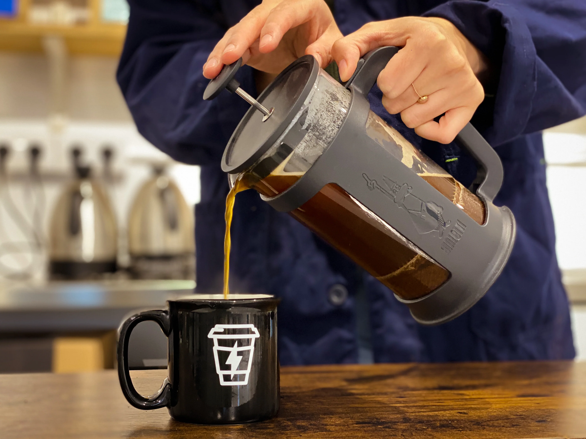
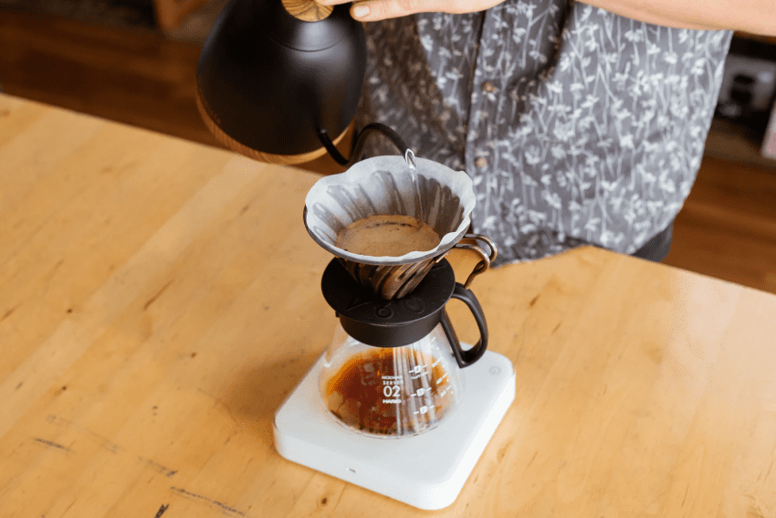
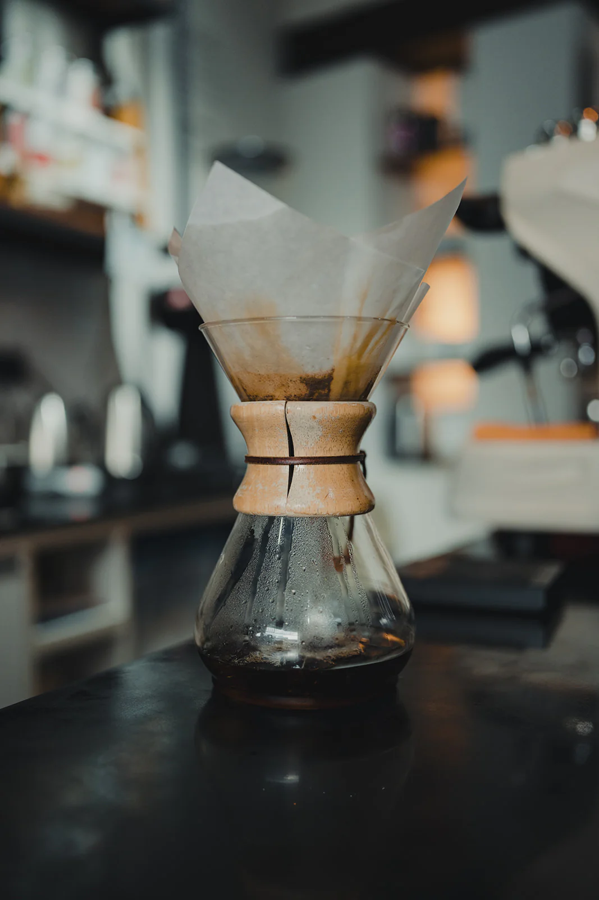

Preparado a Presion
Entenderás cómo la alta presión transforma el café en una bebida concentrada e intensa, y por qué el espresso es la base de gran parte de la cultura cafetera moderna.

Entenderás cómo la alta presión transforma el café en una bebida concentrada e intensa, y por qué el espresso es la base de gran parte de la cultura cafetera moderna.

Descubrirás cómo el contacto prolongado entre el agua y el café genera una taza con más cuerpo, textura y sabores redondos que envuelven el paladar.

Aprenderás cómo el agua fluye a través del café de forma controlada para producir una taza limpia, brillante y llena de matices aromáticos difíciles de lograr con otros métodos.